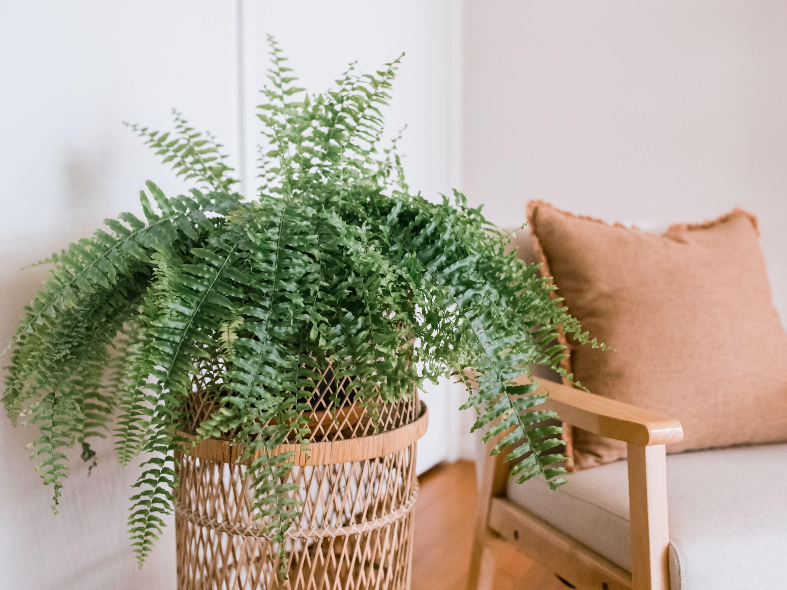
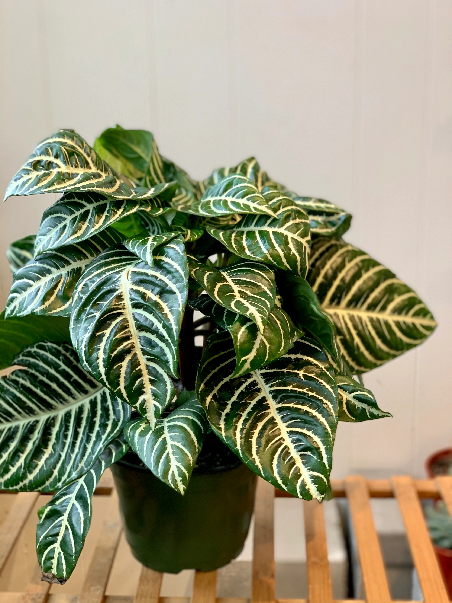
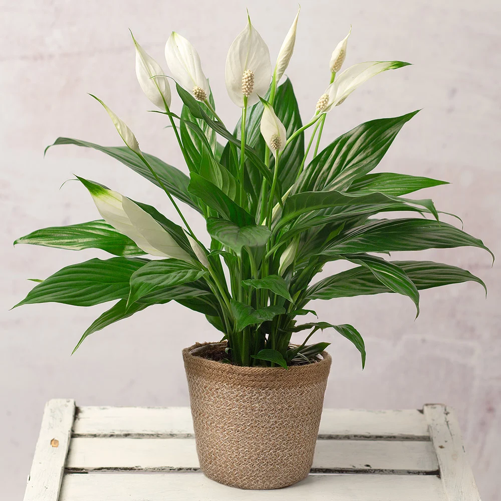
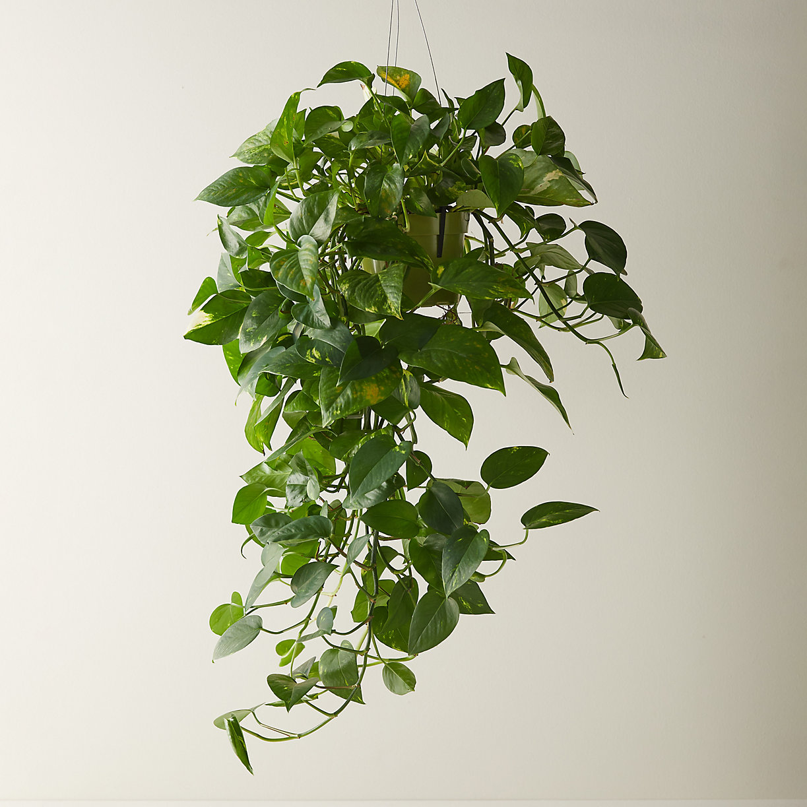

Helicopter Parents
Some might say you love your plants a little *too* much, but I disagree. If you love to baby your plants and have something to do several days a week, you just need the right plants to care for. Being a helicopter parent is tough. Root rot is a free ticket to the grave yard for plants, especially if you are a beginner. Root rot comes from over watering. You can tell if your plant has root rot if it has yellow, droopy leaves or a foul smell in the soil. There a a few different options. One is to throw the plant away and start over. Another is to chop off all of the dark mushy roots and try a water propogation. Or finally, you could trim the roots and then dip them in a fungicide, then repot the plant. You can prevent root rot by knowing your plant's needs. Some plants like to keep moist soil, while others like to dry out the top few inches. Use a light airy soil with drainage like pumice, perlite, or bark. Most importantly, use a pot with drainage holes. With that you should be ready! I've created a list of houseplants that will thrive under your attentive care. Enjoy!
1.The Baby's Tear
This wonderful little plant gets its name from the delicate leaves it has. This plant loves to drink up water and it is very difficult to overwater as it is found naturally near rivers or other swampy areas. They will look best in your home either in a hanging basket or kept trimmed in a litle little sphere. They require high humidity as well as frequest watering, just remember to keep them out of the sun!

2.The Boston Fern
The Boston Fern looks like a very simple common plant. That's what I thought when I took it home and forgot to water it. It was dead within days! These guys need a lot of water! Any type of fern loves to drink up, but I selected the Boston fern for its beauty and popularity. They will probably need your attention every few days depending on the season. If the soil feels dry to the touch, you should water it.

3. The Zebra Plant
The Zebra Plant is a very beautiful and unique looking plant. I would suggest this plant for someone who's more experinced with plants. It requires a lot of humidity, and it is not immune to root rot. It requires a balance of moisture without excess water. After you find your groove with this plant, they are extremely rewarding and you will get lots of compliments!

4. The Peace Lily
The Peace Lily is one of the most popular plants. This is because they are easy to care for, they bloom with beautiful flowers, and they live for generations. The Peace Lily is a great option for anyone who likes to keep the same plant for a long time. They are relatively resistant to root rot and will thrive under your care! Enjoy their beauty whether they are blooming or just showing off their lovely dark green leaves.

5. The Pothos
What can I say, I'm always going to recommend a pothos no matter who you are. These little guys could live whether they're in a desert or a rainforest. My pothos has lived through all of my plant care phases: overwatering, underwatering, too little light, too much light, too much fertilizer, zero fertilizer, etc. They're always going to stick around and thy will reward you with constanr growth even in the winter time!
